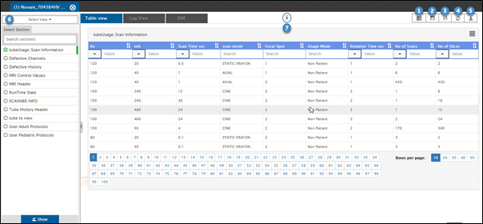
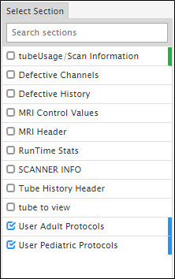
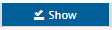
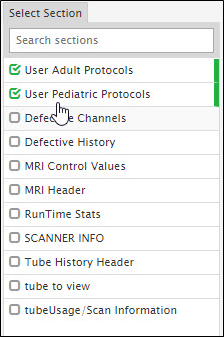
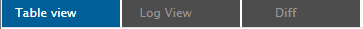

Section view and diff

|
Number |
Description |
|
|
Click here to match common attributes across selected sections in a log bundle. By default, only those attributes that are displayed in the UI are matched. Hence, to match all the common attributes, you must display all attributes of the section. To know more about selecting all the attributes for a section, see Other options section here. To know more about Multiple section’s attribute filter, click here. This option is available only for Table View. |
|
|
Click here to save view. Click here to know more about save view. This option is available only for Table View. |
|
|
Click here to download the selected section data in the PDF format. The PDF file gets saved in the default location on your machine. This option is available only for Table View. |
|
|
Click here to clear all the filters in Select View (annotated by 6) and the Select sections. |
|
|
Click here to download the log bundle. |
|
|
Drop down list of all the saved views. Click here to know more on list view. |
|
|
Hover on |

Steps to view section data in the Table View/Log View/Diff format:
- Select one or more sections for which you wish to view data.

- Click on  to view the data of selected section/s.

- Click on Table View to view section data in tabular format.
- Click on Log View to view section data in its original log format.
- Click on Diff to view difference between selected section’s data of the current log bundle being viewed and any previous log bundle of the selected device.

Created with the Personal Edition of HelpNDoc: Produce Kindle eBooks easily